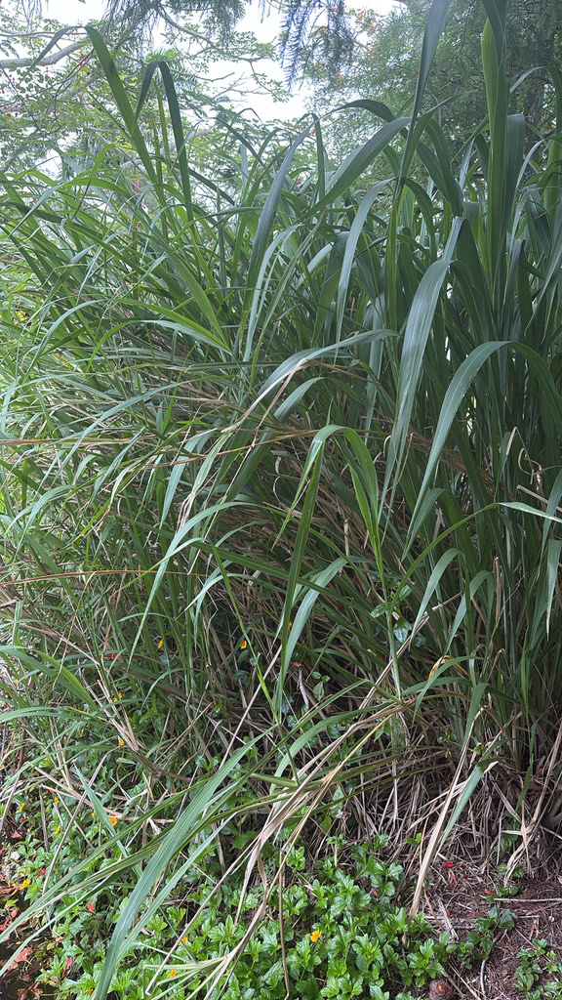

- Fakahatchee Grass shares a botanical subtribe with corn's wild ancestor, and the two can hybridize — its tiny seed spike looks like a miniature ear of early corn.
- The popped seeds are reportedly almost indistinguishable from open-pollinated strawberry popcorn — a quirk that has interested researchers studying corn's origins.
- Its name comes from the Fakahatchee Strand in Collier County, a biologically rich wetland about 150 miles south of Palma Sola.
- The dense fibrous root system is so good at preventing erosion that it's used in restoration projects along stream banks and wet slopes.
Native throughout Florida and the eastern United States, west to Kansas and south to northern South America. Found in moist to wet habitats — wet prairies, pond edges, stream banks, roadside ditches, and low woods. One of Florida's most widespread native grasses.
- The corn connection is genuine but requires precision to explain correctly. Modern corn (Zea mays) descended from Teosinte — a group of wild Mexican grasses — through roughly 10,000 years of Indigenous agricultural selection. Fakahatchee Grass (Tripsacum) and corn's Teosinte ancestors belong to the same botanical subtribe, Tripsacinae, and the two genera can hybridize experimentally.
- The seed spike of Tripsacum looks strikingly like a miniature primitive corn ear — complete with the stacked kernel structure of early cultivated varieties. Indigenous peoples in the Southeast knew Tripsacum well and likely observed the resemblance; the seeds have been found in archaeological sites, though how they were used is not fully documented.
- Researchers have noted that the popped kernels of Tripsacum dactyloides are almost indistinguishable from open-pollinated strawberry popcorn — adding a sensory dimension to the evolutionary story.
- The name Fakahatchee comes from the Mikasuki language — the strand it names in Collier County is one of Florida's most important wild orchid habitats and home to one of the largest wild populations of native Royal Palms (Roystonea regia) in the country.
- A note on this plant's category: Fakahatchee Grass appears in the 'Plants to Watch and Invasive Awareness' section not because it is invasive or listed by FISC, but because it spreads aggressively at Palma Sola beyond where it was originally planted. This is worth noting for park management even though it poses no ecological threat to natural areas outside the park.
- Florida native, not on any invasive species list.
Fakahatchee Grass is a valuable native grass for pond edges and wet margins at Palma Sola. The large seeds produced in late summer and fall are eaten by a range of birds and small mammals. The dense clumping form — with stems often bare in the center and arching outward — provides excellent ground-level cover and nesting structure for ground-feeding birds and small animals.
The leaves are highly palatable to deer. The fibrous root mass stabilizes wet soil effectively and supports the soil invertebrate community. Several skipper butterfly species use native grasses in this genus as larval hosts.
Warm-season perennial spreading by short, jointed rhizomes — forms clumps that are often bare in the center with stems arching outward.
Stout terminal and lateral spikes appearing from late spring through fall — white, pink, yellow, or rust colored. Male flowers (pollen-bearing) are borne in the upper portion of the spike; female flowers (seed-bearing) in the lower portion, maturing from top to bottom.
Relatively large, enclosed in a hard cupule — matures unevenly from top of spike downward. Seed yield is naturally low and seeds don't reseed readily from established stands.
The defining identification feature — a cylindrical spike with distinct stacked segments that look remarkably like a tiny primitive corn ear.
3 to 6 feet long, flat and broad for a grass, dark green, slightly coarse to the touch.
The large, arching clump with stems spreading outward from a bare center is distinctive. The cylindrical seed spikes rising above the foliage in summer and fall are the best identification feature — look for the corn-ear resemblance. The leaves are noticeably broader and coarser than most ornamental grasses.
This isn't commonly eaten today, though historical records suggest Indigenous peoples used the protein-rich seeds as food, possibly popped. The seeds also feed wildlife.
It has no known toxicity to people or pets.
Fakahatchee Grass is a tough customer. When we've needed to remove a clump at Palma Sola, the John Deere Gator isn't enough to budge it — it takes the full tractor to drag that dense, fibrous root mass out of the ground. The same root system that makes it a beast to move is exactly what makes it so good at holding soil in place.

- © Randall Carter (CC-BY-NC), via iNaturalist